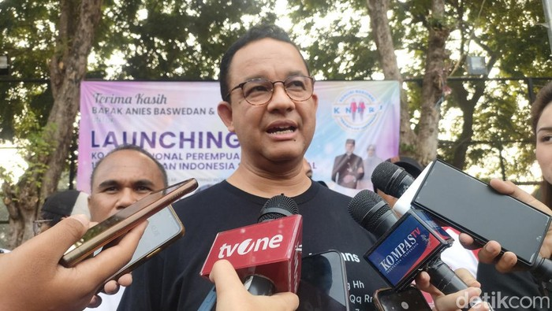

Airlangga Ikut Santap Malam di IKN, Makan Bakso di Samping Jokowi
Dwi Andayani - detikNews
Wednesday, 7 Aug 2024 21:26 WIB
Jakarta - Anies Baswedan buka suara soal pernyataan PKS tentang batas waktu atau deadline Pilkada Jakarta. Anies mengaku kaget ketika jubir PKS bicara batas waktu 40 hari untuk mencari partai pendukung.
"Betul. Itu rekaman yang dibuat Pak Anies untuk Ustadz Khoirudin yang menjelaskan situasi sebenarnya," ujar Angga saat dikonfirmasi, Minggu (11/8/2024).
Dalam rekaman suara itu, Anies awalnya menceritakan soal awal mula dihubungi PKS untuk kesiapan Pilkada Jakarta. Anies menyebut urusan Pilkada Jakarta hanya dikomunikasikan satu pintu.
"Rasanya perlu saya sampaikan juga pada Pak Khoirudin bahwa perlu diluruskan supaya teman-teman PKS di Jakarta, Pak Khoirudin dan teman-teman selama ini kita berjuang bersama itu tahu. Dan teman-teman yang mendukung mengusulkan saya, saya tetap berjuang bersama," ujar Anies.
"Dan tidak ada deadline atau tenggat waktu yang dilewati. Ini perlu saya sampaikan juga agar teman-teman PKS di Jakarta, tahu dan bismillah kita yakin untuk terus berjuang bersama ke depannya, insyaallah sampai di akhir Agustus ini kita bisa sama-sama daftar," lanjut Anies.
Anies kemudian bercerita awal mula dihubungi PKS untuk Pilkada Jakarta. Anies menyampaikan, pada 27 Juli dihubungi untuk melakukan pertemuan dengan Presiden PKS Ahmad Syaikhu. Akhirnya pertemuan itu dilakukan pada Minggu (28/7) lalu.
"Dalam pertemuan itu ngobrol panjang lebar, santai. rileks, suasana juga menyenangkan, beliau menyampaikan PKS memerlukan kejelasan apakah Pak Anies setuju nama Pak MSI sebagai wakil, lalu disampaikan juga waktu seminggu, sampai 4 Agustus, kenapa tanggal 4, karena tanggal 7 rencananya ada rapat DPTP untuk memastikan pasangan AMAN ini sudah aman, akan ditetapkan," ujar Anies.
Anies mengatakan setelah ingin melakukan pertemuan dengan Sohibul Iman untuk bicara. Sebab, lanjut Anies, setelah disampaikan belum ada pembicaraan khusus dengan Sohibul Iman.
"Kita sudah janjian ketemu hari Selasa 30 Juli, jadi waktu ketemu Pak Presiden dengan utusan khusus soal Pilkada 28 (Juli), dua hari kemudian kami jumpa ngobrol agak panjang dengan Pak MSI, soal Jakarta, gubernur dan wakil. Waktu itu beliau diantar Mas Kholid. Besoknya saya hubungi PIC Pilkada, karena pintunya satu," kata Anies.
"Saya sampaikan kalau bisa ingin ketemu Pak Presiden 31 Juli, saya sampaikan saya siap berjuang bersama Pak MSI sebagaimana yang diputuskan DPTP. Disampaikan juga dengan adanya keputusan ini maka mesin partai bisa mulai bergerak," lanjut Anies.
Namun setelah pembahasan itu, Anies mengaku kaget ketika jubir PKS bicara soal batas waktu. Anies menyebut tidak pernah ada pembahasan tersebut.
"Itu pembahasannya sama sekali tak ada 40 hari, saya kaget aja jubir-jubir mengatakan 40 hari, deadline 4 Agustus sebagai deadline cari partai lain, mengapa kaget? Karena memang tak pernah dibahas dan setahu saya tak pernah ada SK dari partai lain, yang ada apakah setuju dengan Pak MSI sebagai pasangan. Dan itu sudah disampaikan 31 Juli, 4 hari lebih awal dari yang diminta," kata Anies.
Comments
Comments List
No comments yet. Be the first to post a comment!